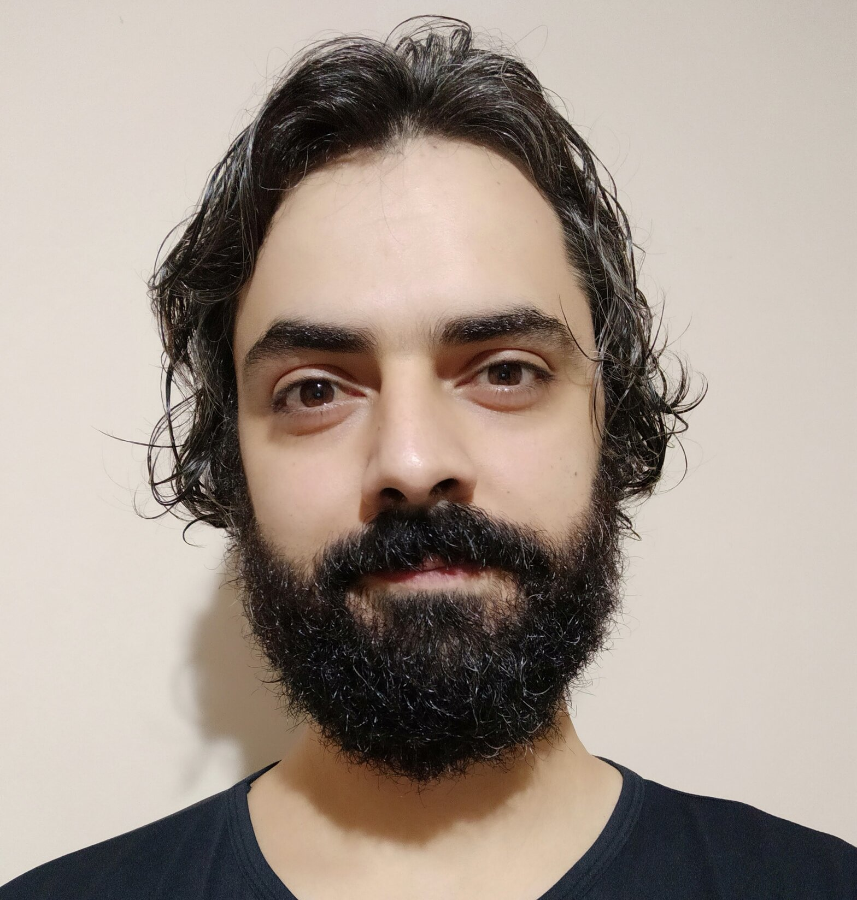

Olá, eu me chamo Danillo, sou brasileiro, nasci e ainda moro na cidade de Americana que fica no interior do estado de São Paulo.
Falo pelos cotovelos, amo trocar e compartilhar informações de qualquer tipo, gosto de jogar tanto jogos digitais quanto analógicos, gosto de correr, caminhar, ver vídeos sobre assuntos diversificados e ouvir podcasts.
Tenho 35 anos e estou em um processo de transição de carreira para a área de desenvolvimento Web. Venho do setor de confecção de roupas e atuava na área de Compras e PPCP(Planejamento, Programação e Controle de Produção).

- Unix
- Shell
- Bash
- Git
- Git & GitHub
- Autoliderança
- HTML
- CSS
- Diversidade & Inclusão
- HTML Semântico
- JavaScript
- DOM
- Flexbox
- React
- Docker
- SQL
- NodeJS
- MongoDB
- MasterClass
- Python
| 1 | 2 |
|---|---|
| A | B |